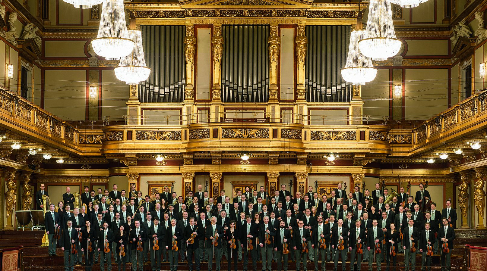

Concert in Barcelona
18:00 | Basilika Sagrada Família, Barcelona, Spain
The concert on 18.9. will be recorded by the Spanish public broadcaster RTVE for the EBU.
TV broadcast dates are:
3SAT: Saturday, 18.9.2021 at 8:15 p.m.
TVE La2: Saturday, 18.9. at 8:25 p.m.
ORF 2: Sunday, 19.9.2021 at 9:05 a.m.
The programme will be transmitted by many other broadcasters around the world within the coming months. The exact broadcast dates and times will be published by the local stations.
CONDUCTOR
Christian ThielemannORCHESTRA
Vienna PhilharmonicPROGRAM
Samy MoussaElysium
Anton Bruckner
Symphony No. 4 in E-flat Major, WAB 104 ("Romantic") (2nd Version 1878/1880)